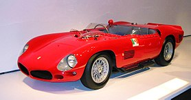
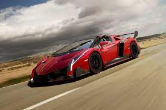

Az Olasz autók
Ferrari
A Ferrari mára már a világ egyik lehíresebb és legnagyobb bevételel rendelkező autómárkája. Egy ideig egy Ferrari tartotta a lágdrágábban elkelt autó világrekordját, amit 2009. május 17-én álított fel a 250 Testa Rossát tipusú autó a maga 12,1 millió dollárjával.
{kind=link}
Enzo Ferrari 1929-ban alapította a Ferrarit akkor még Scuderia Ferrari néven, amatőr versenyzók szponzorálására. Eleinte csak versenyautókat gyártottak, majd 1947-ben megjelent az első utcai autójuk. 1940-ben, amikor Enzo Ferrari felismerte, hogy szeretett csapatát, a Scuderiát az Alfa Romeo be akarja olvasztani, kilépett az Alfától és visszatért csapatához. Mivel jó ideig távol kellett maradnia a versenyektől, repülőgép-alkatrészeket és egyéb gépészeti termékeket gyártottak. A versenyeket a II. világháború is lehetetlenné tette. A gyár 1943-ban Maranellóba költözött, de 1944-ben lebombázták, és csak 1946-ra hozták helyre. A Ferrari 1969 óta volt a Fiat tulajdona, jelenleg a részvények 90%-át birtokolja az olasz autóipari óriás. Ám úgy néz ki, a Fiat és a Chrysler összeolvadása során ez a kapcsolat megszakad: hivatalosan is bejelentették, hogy a Ferrarit külön cégbe szervezik. A tulajdonosok persze ugyanazok lesznek, azaz a Fiat aktuális részvényesei birtokolják majd az önálló Ferrarit is. Enzo Ferrari utóljára az 1988-as Ferrari F40 bemutatását felügyelte.
Alfa Romeo
 A világ 7 legnagyobb autómárkája, amely
2024 decemberébe fogja átadni az első 33 Stradale-t a legújabb és legdrágább modelljét melynek az
ára 1,7 millió fontról indul és az utolsó modellje a számítások szerint 2026-ban fog elkészülni.
A világ 7 legnagyobb autómárkája, amely
2024 decemberébe fogja átadni az első 33 Stradale-t a legújabb és legdrágább modelljét melynek az
ára 1,7 millió fontról indul és az utolsó modellje a számítások szerint 2026-ban fog elkészülni.
A cég elődjét, a Darracq Italianát 1907-ben egy milánói arisztokrata, Ugo Stella lovag és Alexandre Darracq francia autógyáros alapította. A cég kezdetben Nápolyban gyártotta a Darracq autókat. A Darracq Italiana megszűnése után Stella és több olasz befektető egy újfajta Daracqot kezdett el gyártani Milánó Portello nevű kerületében. Ekkor a cég megváltoztatta nevét, innentől használta az A.L.F.A. rövidítést (Anonima Lombarda Fabbrica Automobili, magyarul a hivatalos megnevezése: Lombardiai Autógyár). Ugo Stella nagy döntése az volt, hogy felvette a kiváló mérnököt, Giuseppe Merosit. Az első modell az 1910-ben gyártott 24 darab sportos HP autó volt. Ezt további 12 HP követte, amelyet ugyanazzal a motorral szerelték, de teljesítményét lecsökkentették. Miután Nicola Romeo megvásárolta a gyárat, az embléma fémes karimájába az ALFA ROMEO-MILANO felirat került. Az első Alfa Romeo márkanév alatt gyártott autó 1920-ban készült el. Ez volt a Torpedo 20-30 HP.
Lamborghini
Jelenleg egyik legdrágább és a gazdagok körében legsikersebb autóit gyártó cég a világon. A cég 50. évfordulórája készült a jelenleg is legdrágább Lamborghini, a Lamborghini Veneno, amelynek ára 4,5 millió dollár.
{kind=link}
A céget Ferruccio Lamborghini alapította 1948-ban a Ferrara tartományban lévő Centóban. A vállalat
kezdetben traktorokat gyártott, 1958-tól pedig már égőket és klímaberendezéseket is készített. A
vagyonossá váló Ferruccio több versenyautót is kipróbált, köztük Ferrarit is, de egyiket sem találta
tökéletesnek, sőt a Ferrarit a legalsó kategóriába sorolta. Fejlesztési tanácsaival megkereste a
„Comandantét” (azaz Enzo Ferrarit, akit általában csak így emlegettek: a Parancsnok), ám a hírhedten
gőgös és sértődékeny cégvezető kiadta az útját, mondván, ha ennyire tudja, építsen ő autót. Így is
tett. 1962-ben megalapította az Automobili Lamborghinit, amely márkajelének Murciélagó képét
választotta. E legendás bika 1879-ben egy viadalon 24 kardszúrást élt túl, és az erő egyik
szimbóluma lett.
"Az vesz Ferrari-t aki valaki szeretne lenni, de Lamborghini-t olyan vesz aki már valaki."
Források
- https://hu.wikipedia.org/wiki/Ferrari 2024.05.30
- https://hu.wikipedia.org/wiki/Alfa_Romeo 2024.06.01
- https://roadster.hu/alfa-romeo-33-stradale/ 2024.06.02